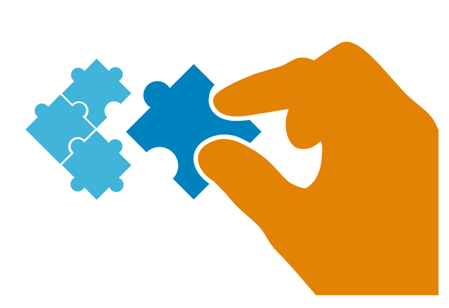

-

Step One
Search
You can use our search engine to browse through our research trailers database. In order to make your search as accurate as possible we provide a list of keywords that define your interest and other filters, like name, country, year.
-
Step Two
Get results
You will be presented with a list of results which you can explore. If you find something exciting you can express your interest and the author will be notified.
-

Step Three
Establish contacts
If the author accepts your interest a conversation thread will open. There you can discuss the research ideas and results found and perhaps start a fruitful collaboration.